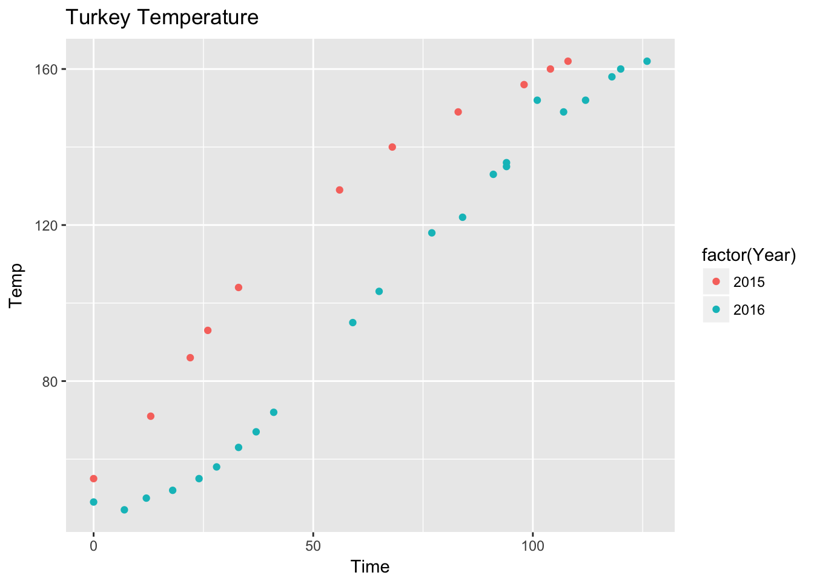

It’s the day after Thanksgiving, and we have data on another turkey. This year our electricity went out just before I was going to put the turkey in our old electric oven so I had to go to my parents’ house to cook the turkey. They just got a fancy new oven with convection roasting, and they claimed it would be faster. This called for an analysis!
Methods
Like last year, I took measurements of the probe thermomenter inserted into the deepest part of the breast. The birds were approximately the same size ~14 lbs.
The recipe I used both times was from the Alton Brown Good Eats Thanksgiving episode. I brined the thoroguhly defrosted turkey in ice cold conditions, then roasted it at 500 degrees Fahrenheit for 30 minutes. After this, I covered the breast with a double layer of heavy duty aluminum foil and dropped the temperature to 350 degrees. I then roasted the bird until the temperature of the breast had risen to 161 degrees.
Results
Here’s the raw data from both 2016 and 2015. The units of time are minutes from sticking the bird in the oven. The units of temperature are degrees Fahrenheit.
dat <- read.csv("../datasets/turkey.csv")
dat## Time Temp Year
## 1 0 55 2015
## 2 13 71 2015
## 3 22 86 2015
## 4 26 93 2015
## 5 33 104 2015
## 6 56 129 2015
## 7 68 140 2015
## 8 83 149 2015
## 9 98 156 2015
## 10 104 160 2015
## 11 108 162 2015
## 12 0 49 2016
## 13 7 47 2016
## 14 12 50 2016
## 15 18 52 2016
## 16 24 55 2016
## 17 28 58 2016
## 18 33 63 2016
## 19 37 67 2016
## 20 41 72 2016
## 21 59 95 2016
## 22 65 103 2016
## 23 77 118 2016
## 24 84 122 2016
## 25 91 133 2016
## 26 94 135 2016
## 27 94 136 2016
## 28 101 152 2016
## 29 107 149 2016
## 30 112 152 2016
## 31 118 158 2016
## 32 120 160 2016
## 33 126 162 2016It is easier to see these as a graph.
library(ggplot2)
ggplot(dat, aes(x=Time, y=Temp, color = factor(Year))) + geom_point() +
ggtitle("Turkey Temperature")
It clearly took longer in 2016 than 2015, possibly because the bird started out about 8 degrees colder. This year’s bird also stayed colder for longer than the prior year. The amount of time it took to reach the starting temperature (55 degrees) from 2015 was about 24 minutes. This was pretty similar to the difference in time to reach the final temperature (108 vs 126 minutes, a difference of 18 minutes). So the turkey caught up by 6 minutes in the convection oven. Six minutes over two hours is about 5 percent, so the difference really wasn’t all that much by convection!
Conclusion
Convection roasting on my mom’s new oven doesn’t make cooking a turkey appreciably faster than on my old oven.